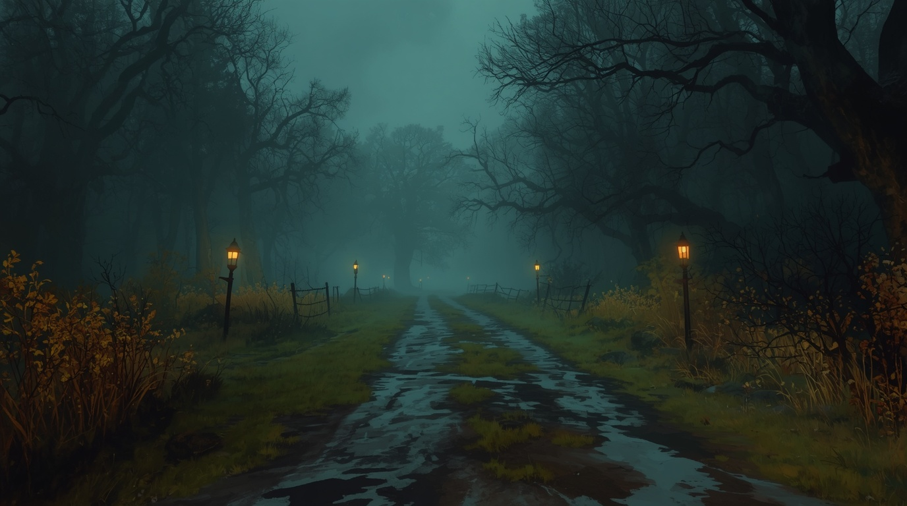

I
IThe first refuge
Ashmere
Meet the people who keep the town standing. Trade, craft, recover, take on work, and prepare before you leave its walls.
Explore the field guide ↗
An expedition-led dark-fantasy RPG
Beyond Ashmere, the old road winds into a world that has not forgotten its wounds. Prepare your traveler, choose your path, and discover what waits beyond the lantern light.
A browser-playable role-playing game · In active development
The places that shape the journey
Begin in a town that survives by preparation. Follow the road into uncertain country. Bring back what you find—and learn what the frontier is becoming.
IThe first refuge
Meet the people who keep the town standing. Trade, craft, recover, take on work, and prepare before you leave its walls.
Explore the field guide ↗ II
IIThe proving ground
Choose between routes, face encounters, manage pressure, make camp, and record the discoveries that survive the journey.
Begin the journey ↗ III
IIIThe frontier taking shape
Discover the marsh routes, local work, salvage, and regional story threads as the next part of the world takes shape.
Follow its development ↗
THE OLD ROAD · OUTSIDE ASHMEREEvery journey asks something of you
LEGEND is built around the rhythm of a dangerous journey: prepare in town, make decisions beyond its gates, survive what the road sends, and return with a story worth recording.
Shape your character and discover the choices that define a first journey.
Use the town's people and services to get ready for the road ahead.
Choose routes, manage supplies and pressure, and fight when the road turns hostile.
Keep your rewards, progress, and discoveries—and decide what to do next.
A journey shaped by consequence
Read the road, choose your route, and decide which risks are worth taking.
Face turn-based fights where preparation, health, equipment, and decisions matter.
Earn experience, improve your attributes, find gear, and build a more capable traveler.
Keep a field journal of places, evidence, and the things learned along the way.
The work behind the world
LEGEND is an independent game in active development. The Chronicle follows the craft behind the world; the Dispatch carries selected milestones, design notes, and announcements.
Latest development record
Behind the new musical identity, location ambience, and gameplay sound library—and the listening and integration work that follows.
Read the Chronicle entry ↗Keep a place by the fire
Join the community, read the development record, or subscribe to the Development Dispatch for selected news from the frontier.
Useful places